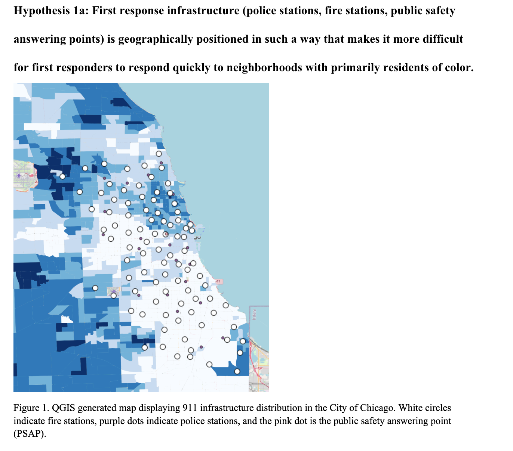
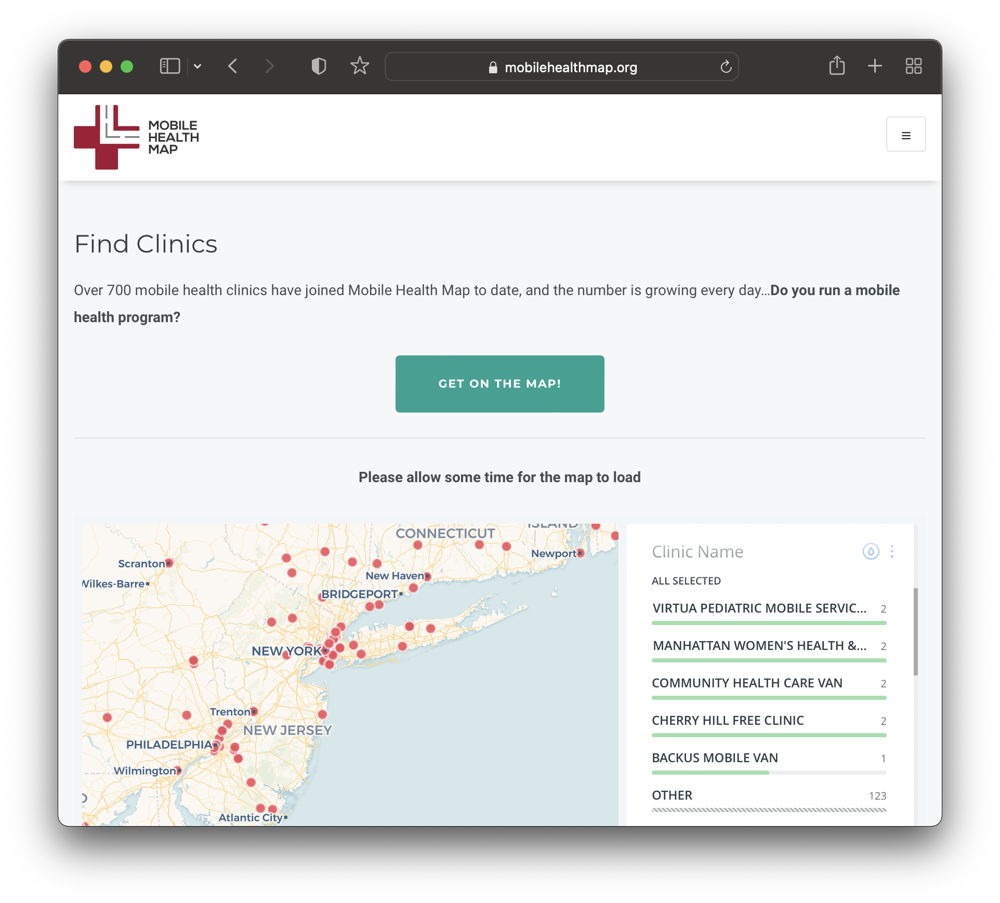

Menu
GIS, maps + data @ Harvard Library
Home
Guides and Tutorials
Software access
QGIS Hub
Data curation
Workshops
Applied projects
News
↵
GIS, maps + data @ Harvard Library
↵
Classes
↵
Government
↵
1008 - Introduction to Geographic Information Systems
👋
Fall 2022 Harvard Map Collection
Fall 2022 Harvard Map Collection


This site is a project of the Harvard Map Collection. Visit
our website
to learn more.